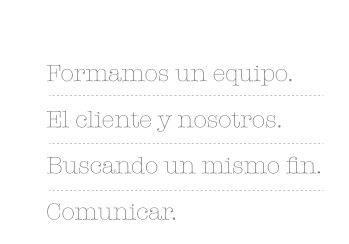

- 
-

Chantal Steverlynck
Diseñadora Gráfica
Diseñadora egresada en la UBA. Fotógrafa profesional, recibida en la escuela de fotografía Andy Golstein. Trabajé en diseño editorial, publicitario, imagen corporativa, comunicación interna, participé en el desarrollo de promociones, para grandes marcas como Samsung, IAE, Duke Energy, Quilmes, Molinos, Sony Ericcson.
-

Paula de Estrada
Diseñadora Gráfica
Diseñadora gráfica egresada en la UBA. Trabajé en agencias de diseño y comunicación, con las siguientes cuentas: Renault, Telefónica,HSBC, Danone, Kellog's . En el año 2010 comencé a trabajar de forma independiente, realizando con Chantal nuestros primeros trabajos en conjunto.